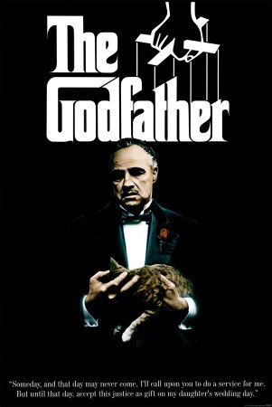
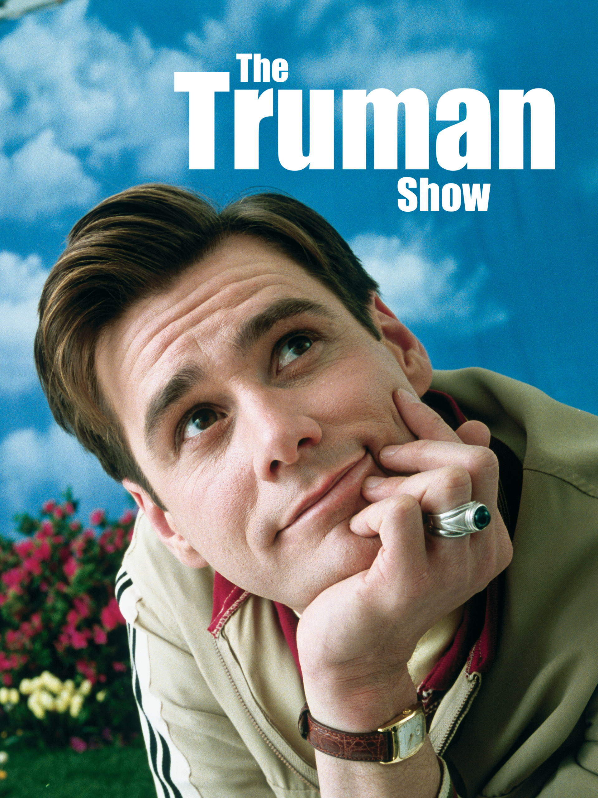
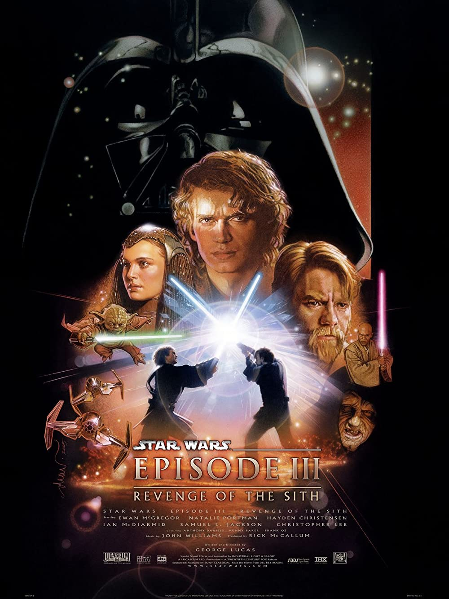
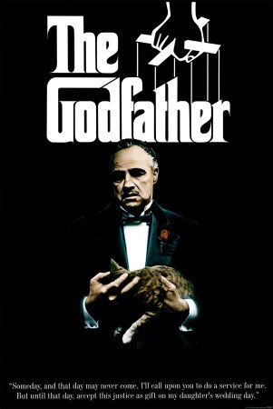
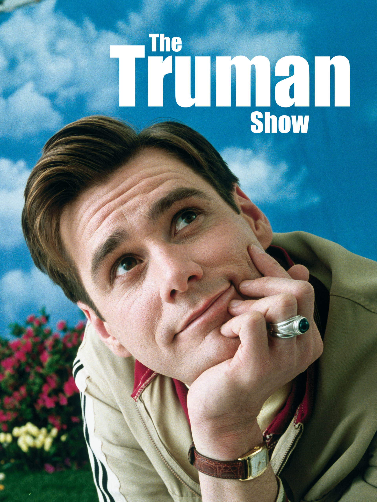
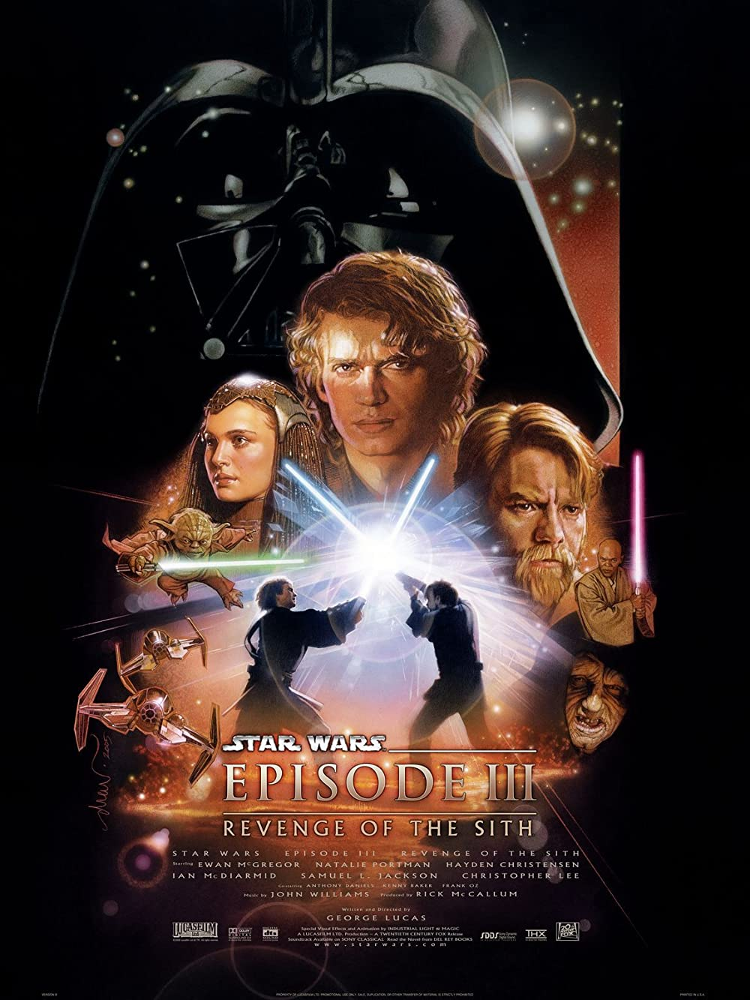
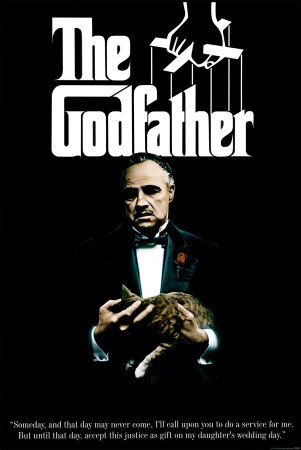
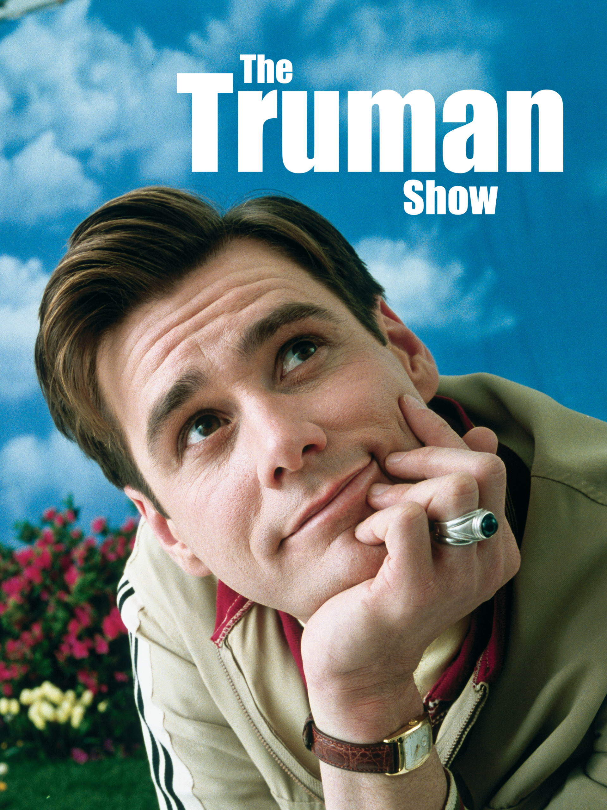
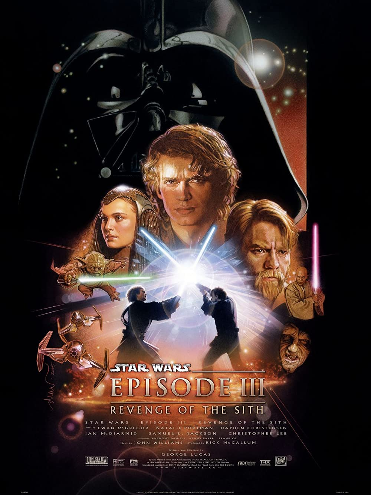
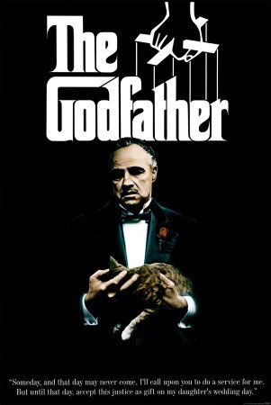
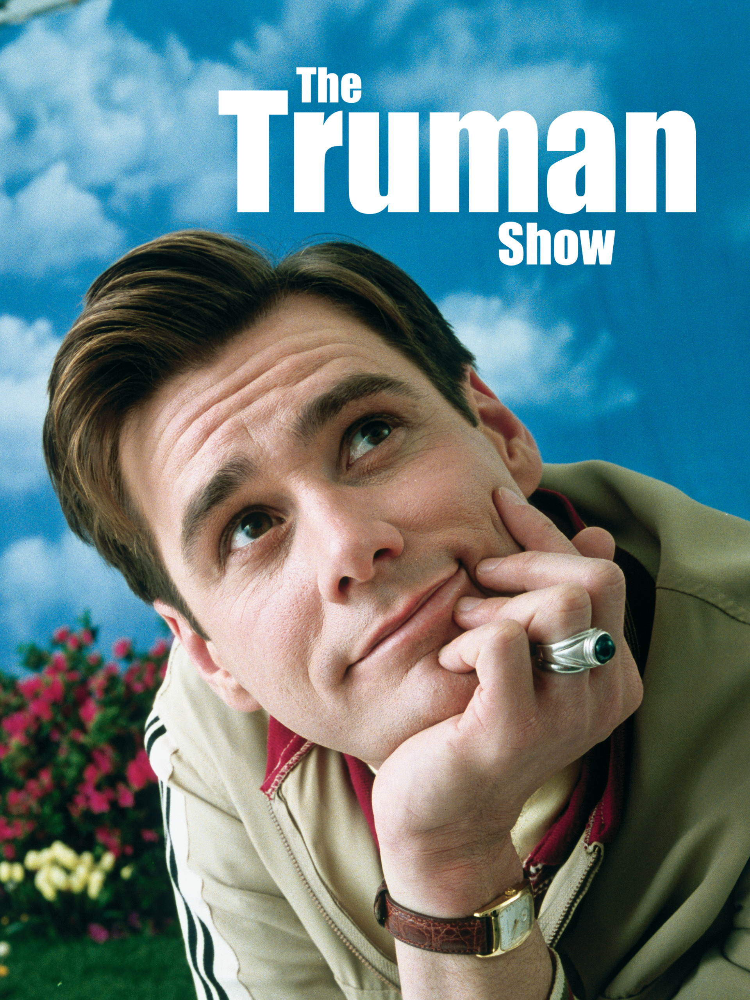
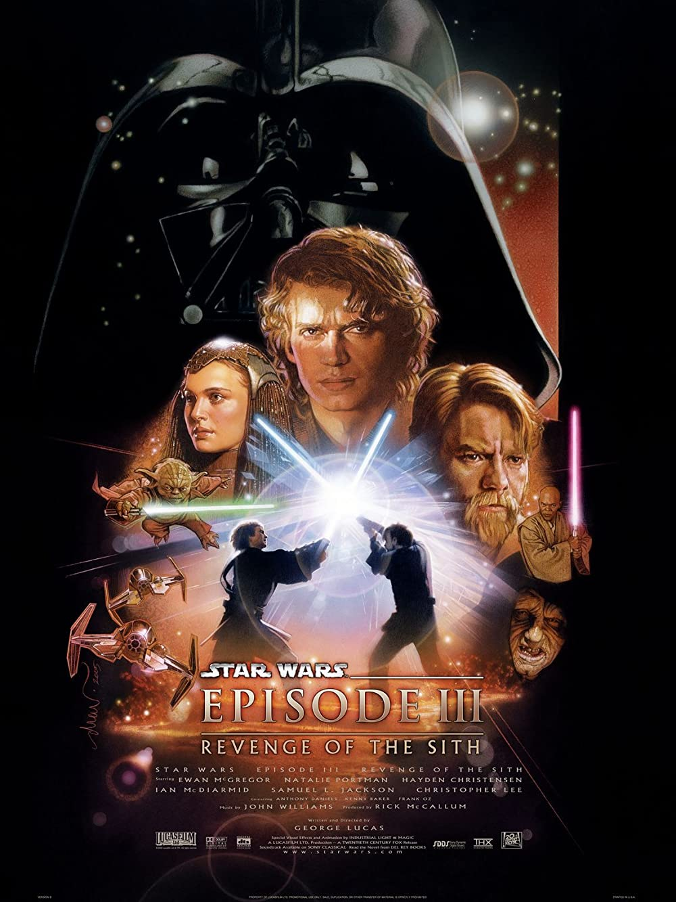
The Dark Knight
Christian Bale’s most brutal Dark Knight scene with Heath Ledger was actually real
An unearthed Christian Bale interview sheds light on Heath Ledger’s portrayal of the Joker in Christopher Nolan film The Dark Knight. Originally published by THR, the interview sees Batman actor Bale recount his memory of the “committed” performance from Ledger, which debuted 14 years ago this week. Bale revealed that the actor wanted to be hit for real in one of the 2008 film’s key moments: the interrogation scene. The interview, conducted by Joseph McCabe in 2008, is featured in the new book 100 Things Batman Fans Should Know & Do Before They Die. Bale remembered: “As you see in the movie, Batman starts beating the Joker and realises that this is not your ordinary foe. Because the more I beat him the more he enjoys it. The more I’m giving him satisfaction.
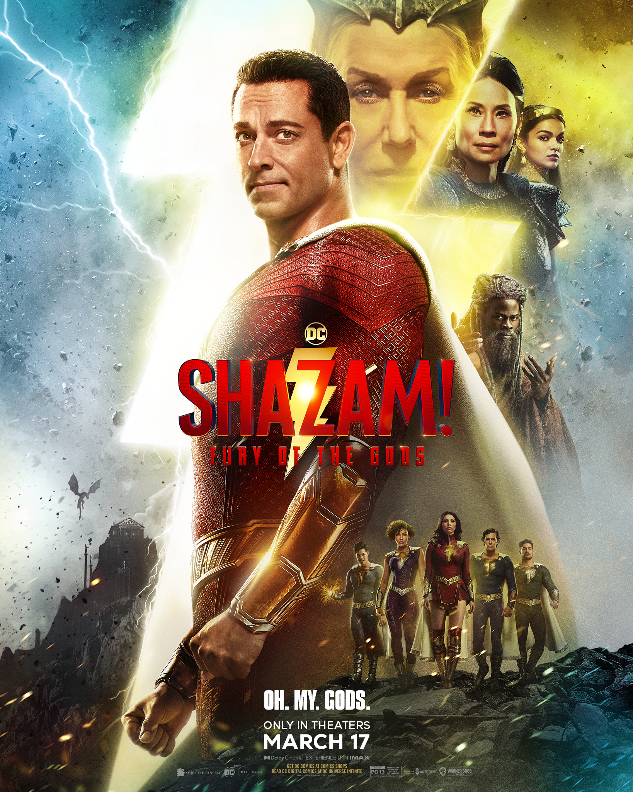
Shazam! Fury of the Gods
New shazam movie: Shazam! Fury of the Gods
The film continues the story of teenage Billy Batson who, upon reciting the magic word "SHAZAM!" is transformed into his adult Super Hero alter ego, Shazam.
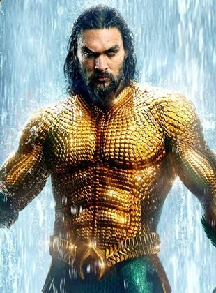
Aquaman and the Lost Kingdom
New movie: Aquaman and the Lost Kingdom
Plot unknown. Sequel to the 2018 film 'Aquaman.
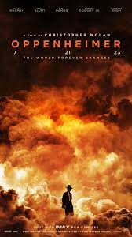
Oppenheimer
Marvel’s ‘Daredevil: Born Again’ Taps ‘American Assassin’ Director Michael Cuesta For Latest Disney+ Series
It’s been a busy week for Marvel’s “Daredevil: Born Again” as production is ramping up in NYC. First, it was announced that Jon Bernthal would be returning to the role of Frank Castle, aka, The Punisher, in the Disney+ series alongside fellow former “Daredevil” cast members Charlie Cox and Vincent D’Onofrio in their respective Marvel roles. That pair have already showed-up in previous MCU projects.